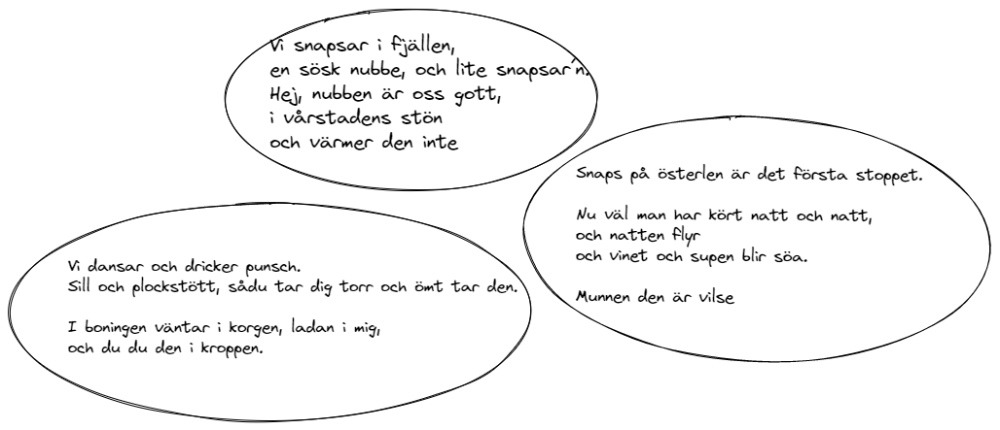
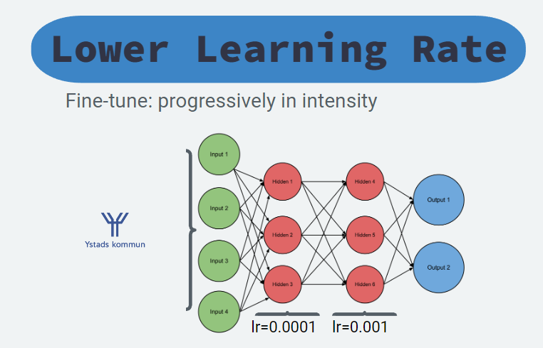

This midsummer my friends gave me the idea that I should generate Swedish Drinking Songs, or Snapsvisor, using Machine Learning and I thought it could be a lot of fun! üçª
To achieve the best results I‚Äôd need access to GPT-3, or equivalent model, alas I don‚Äôt and as such I needed to do some extra work! Fun work though! ü§ì
First some examples: 
Why GPT-3?
- Possible to do prompt engineering, which gwern has a great blog on
- TL;DR prompt engineering allows you to write a prompt and get a response, e.g. “step-by-step how to write a blog” and the return the step-by-step.
- Much better zero-/one-/few-shot learning
- Because the model has a ton more parameters and trained on a larger dataset
Drawbacks with GPT-2: - The performance is noticable worse because of the lower parameters and less data, sometimes called tokens, used to train the model.
As such the result is not amazing, but it’s capable and really funny - based on the premise that you know Swedish!
It’s available on the HuggingFace Hub with a inference widget and as a pre-trained model, which can generate your own Snapsvisor - N.B. it removes newlines.
from transformers import AutoTokenizer, AutoModelForCausalLM
tokenizer = AutoTokenizer.from_pretrained("lunde/gpt2-snapsvisor")
model = AutoModelForCausalLM.from_pretrained("lunde/gpt2-snapsvisor")GPT-3: Few-Shot Learning and Prompt Engineering
Few-Shot Learning is the capability to solve an unknown task using either very few or no (training) data points at all to solve, which can successfully be done today.
In other words, we can achieve great accuracy with little or no data att all!
Few-Shot Learning reminds me of how human learns, we are very fast at generalizing knowledge. By knowing the difference between a cat, dog and tiger we can very fast learn that a lion is a unique animal and if we are told the name we know that this unique animal is a lion!
We are also able to make up words that we don’t know about, like “car wheel” by seeing a wheel on a car!
Few-Shot Learning Explained
Less theory, more examples!
Prompt Engineering is a Few-Shot technique that grew increasingly powerful with each generation of Large Language Models (LLM) and with GPT-3 it became incredibly good.
- Model: The Large Language Model (LLM) being used, e.g. GPT-3 .
- Prompt: The text given to the LLM to generate an answer from, or complete.
- Zero-shot: A prompt with no examples, e.g.
The name of a character from Star Wars is:or[Swedish: "Snaps!", English: " - Few-shot: A prompt with one (1-shot) or more (n-shot, few-shot) examples. See example below
To then give a example of few-shot (4) prompt:
This is a list of startup ideas:
1. [Tag: Internet] A website that lets you post articles you've written, and other people can help you edit them.
2. [Tag: Home] A website that lets you share a photo of something broken in your house, and then local people can offer to fix it for you.
3. [Tag: Children] An online service that teaches children how to code.
4. [Tag: Financial] An online service that allows people to rent out their unused durable goods to people who need them.
5. [Tag: Machine Learning]Using Prompt Engineering and GPT-3 I’m certain that it’d be possible to generate Snapsvisor with little data, i.e. Few-Shot Learning.
GPT-2’s few-shot capabilities are much smaller as such I need to Fine Tune the model.
Fine-Tuning a model
Fine-Tuning a model can be done in multiple ways, three examples of fine-tuning is
- Training (like normally)
- Freezing
- Dynamic Learning Rate
Training
Simply train your pre-trailed model with the new dataset. The Language Models parameters is already encoded with knowledge about language, structure and semantic meaning. This efficient representation and initiation means that it faster learns about new, similar, tasks than a pseudo-random weight initialization.
It has to be noted that the pre-training task, scheme and data impacts the later fine-tuning.
Freezing
Freezing layers is one of the most common approaches, usually freezing all layers except the head - the head is the final layer(s) and the rest is the backbone. Usually the head is equal to the classification layer.
In other words, the head takes an internal representation, embedding, and learns to decode it in the optimal way to solve the task.
By only changing your head and training that part we train the model faster and don’t risk forgetting important information in the network.
Important info early in the network:
Early in the network important information is chopped into large pieces and unimportant information is largely removed.
Like carpeting you first chop the large pieces and the further you get the smaller and finer details are built. The same can be said about neural networks.
This means that if we learn to remove important information at the early stages we’ll loose it. This is catastrophic forgetting.
Once the head is trained we can improve the results further by gradually unfreezing the last layers, one at a time. But make sure to have a low learning rate as otherwise the model might forget important information.
Dynamic Learning Rate
Rather than freezing and unfreezing layer there’s a technique where you apply different learning rates, lower in early layers and larger at the final ones.
This means that we don’t risk forgetting important information in the early layers.

Building the dataset of Snapsvisor
Because only GPT-2 was accessible we must Fine-Tune the model. Gathering the data becomes the first and most important step, and we need many Snapsvisor.
To build this dataset I decided to do what most software developers decide to do in this stage, scrape the internet. The internet is really a wonderful source of data and I found multiple sites that had Snapsvisor.
To query and parse these I needed my necessary tools, which in Python naturally is
requestsBeautifulSoup4
Requests
It’s very easy to do HTTP-requests using requests, simply call .get or .post
import requests
url = "https://www.website.com/path/to/query"
resp = requests.get(url)
resp.status_code, resp.text # also possible to run resp.jsonAnd if the web-page blocks you by some reason most of the times it can be solved by updating the headers supplied.
headers = { "User-Agent": "Mozilla/5.0 (Windows NT 6.1; WOW64; rv:20.0) Gecko/20100101 Firefox/20.0" }
resp = requests.get(url, headers=headers).textThat’s all we need to learn about requests for now!
BeautifulSoup
And how about BeautifulSoup, or bs4 as it’s sometimes called?
It’s also rather easy, the webpage is returned almost like a dictionary with tools to query in-memory.
resp = requests.get(url).text
soup = BeautifulSoup(resp, "html.parser")
# now you can query `soup.find_all("a")` to get all a-elements in the HTML page etcTo learn more see the documentation at https://www.crummy.com/software/BeautifulSoup/bs4/doc/.
Fine-Tuning the model
I found a swedish version of GPT-2 in the HuggingFace Hub ü•≥
Fine-Tuning the model on my data to generate Snapsvisor is not far away! üòé
To move fast and make it easy I chose to use the HuggingFace Trainer-API. A better tutorial than this one is available in the HuggingFace documentation.
from transformers import AutoTokenizer, TextDataset, DataCollatorForLanguageModeling
from transformers import Trainer, TrainingArguments, AutoModelForCausalLM
model_name = "flax-community/swe-gpt-wiki" # replace with your model
tokenizer = AutoTokenizer.from_pretrained(model_name)
model = AutoModelForCausalLM.from_pretrained(gpt_model)With the pretrained model and tokenizer locked and loaded we’re ready to fine-tune with our own data.
Loading our dataset can be done in multiple ways, but the easiest is most likely to either use HuggingFace [datasets](https://huggingface.co/docs/datasets) or through their DataCollatorForLanguageModelling .
def load_dataset(train_path, tokenizer):
train_dataset = TextDataset(
tokenizer=tokenizer,
file_path=train_path,
block_size=128)
data_collator = DataCollatorForLanguageModeling(
tokenizer=tokenizer, mlm=False,
)
return train_dataset, data_collator
train_path = "all_text.txt" # replace with your training file
train_dataset, data_collator = load_dataset(train_path, tokenizer)With our model, tokenizer and (training) dataset ready we can start fine-tuning the model! This is easiest done using HuggingFace’s Trainer .
HuggingFace has used a Argument-Object pattern to reduce the number of arguments to the Trainer. The TrainingArguments class wraps a lot of the arguments, fully typed. üëå
training_args = TrainingArguments(
output_dir="./gpt2-snaps", # The output directory
overwrite_output_dir=True, # Overwrite the content of the output directory
num_train_epochs=300, # Number of training epochs
per_device_train_batch_size=8, # Batch size for training
save_steps=1000, # After # steps model is saved
warmup_steps=500, # Number of warmup steps for learning rate scheduler
fp16=True # Activate float-point=16 precision to train faster
)
trainer = Trainer(
model=model,
args=training_args,
data_collator=data_collator,
train_dataset=train_dataset,
)Training is one click away! But we don’t have a validation dataset?
As I have little data I chose to train with all data, I don’t really care if we overfit the data (unless it looks bad) for this small task. As such we use all the data to train our Language Model.
trainer.train(resume_from_checkpoint=True)
trainer.save_model()Generating text, or inference, is smooth using HuggingFace pipelines.
from transformers import pipeline
trainer.model.cpu()
snaps = pipeline('text-generation', model=trainer.model, tokenizer=gpt_model)
result = snaps('Nu tar vi en nubbe')That’s all there is really!
Some examples:
Nu tar vi en nubbe,
Den ska hellre krypa och bränna upp.
Vi bränna, men inte mjölka oss,
och bränner till bords
Nu tar vi en nubbe – slåss här i ett svep.
Byssa luderorgon, snapsar!
När den evigt låga solen tar oss en ljus natt,
ingen blir så dragen vid näsan
TL;DR (Too Long; Didn’t Read)
For those that are not interested in details or writeups I thought I’d leave a small TL;DR
- Find a pre-trained Language Model (e.g. GPT-2) (link)
- Scrape the web for text data (in my case “Snapsvisor”) using
requests(link) andbeautifulsoup4(link) - Fine-Tune the model using HuggingFace
Trainer-api (link) - Generate text using HuggingFace
pipelines(link)
And in the end we can generate some Snapsvisor, like the following examples
Snälla skålar till en nubbe, buguperrens till en skål.
Snapsen får ta en nubbe,
när nubben inte tagit visdomsträngar,
sen får ta nubben hellre.
Hinka lilla magen, ta nubben,
där ska det gå till en nubbe.
Nu tar vi en nubbe,
Den ska hellre krypa och bränna upp.
Vi bränna, men inte mjölka oss,
och bränner till bords
Nu tar vi en nubbe – slåss här i ett svep.
Byssa luderorgon, snapsar!
När den evigt låga solen tar oss en ljus natt,
ingen blir så dragen vid näsan
And it’s available on the HuggingFace Hub with a inference widget, which can generate your own Snapsvisor - N.B. it removes newlines.
from transformers import AutoTokenizer, AutoModelForCausalLM
tokenizer = AutoTokenizer.from_pretrained("lunde/gpt2-snapsvisor")
model = AutoModelForCausalLM.from_pretrained("lunde/gpt2-snapsvisor")Until next time!
~Hampus Londögård